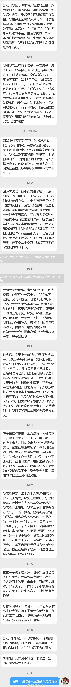

不知道为什么，类似情况私信的大多数都是好好的家被老公借外债弄垮了。是不是男人天生激进？借债，尤其是高息债真的风险很大，一定要慎重。还有，类似的情况，请男人们有点担当吧。两个月在家呆着，送个外卖还点钱也好啊。 
一波疫情过去，瘦了十几斤。练出了人鱼线，10公里跑入了40分钟。顺便还在股市赚了1个小目标。————————————————————————————————————————————————————————————————————————————————————————————————————朋友圈看到的，与君共勉。
回复@江风其凉:对。三月暂停网格新开仓交易。但是原来的持仓和利润没有清仓啊。当时微博说的清清楚楚//@江风其凉:白银我记得不是因为不安全停了么@ETF拯救世界:白银没有长期仓位，只有几年网格留的利润。没吃肉，喝点肉汤也挺好。这部分右侧出，不急。
转发微博@丁辰灵:那为什么欧美国家可以至少在表面上信息不受管控呢？ 其实欧美国家实质上信息仍然是管控的，只不过管控的非常巧妙。比如美国的媒体都寡头化了，各类媒体都在几大寡头手上。默多克有福克斯，disney有ABC，科赫兄弟收购了时代杂志。寡头的媒体肯定是服务寡头的利益，欧美寡头隐身在政治背后，政府前台的政客只是寡头手上的傀儡和提线木偶。所以欧美的记者和媒体，有很多红线是不能触碰的，比如犹太人的负面。 我的偶像知名武侠作家金庸，也是明报的创办人查良镛曾经说过，完全中立客观的新闻是不存在的，他说如果我的编辑不听话写一篇报道，第一次阻止他他不听，第二次还写，那我会很客客气气的给他递一张支票，请他离职。又被割韭菜了？如何分辨金融和媒体假消息